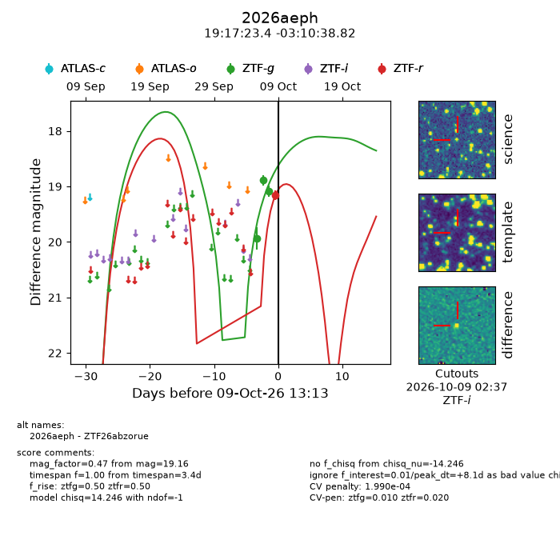
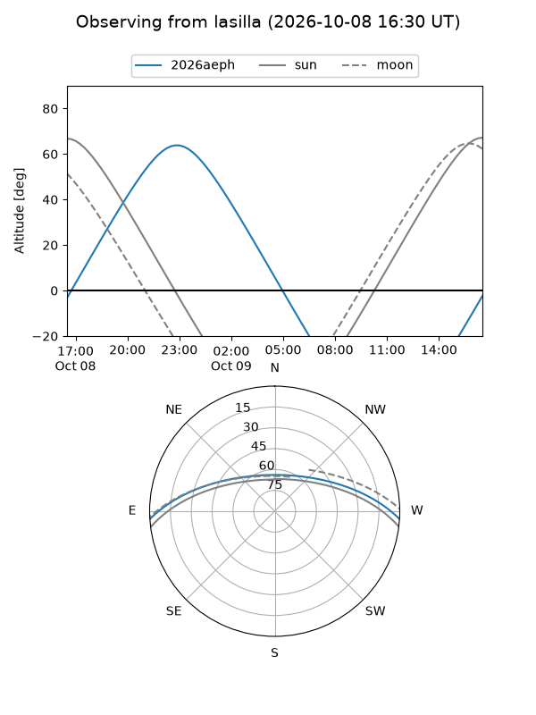
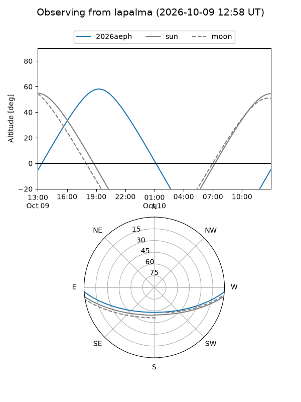
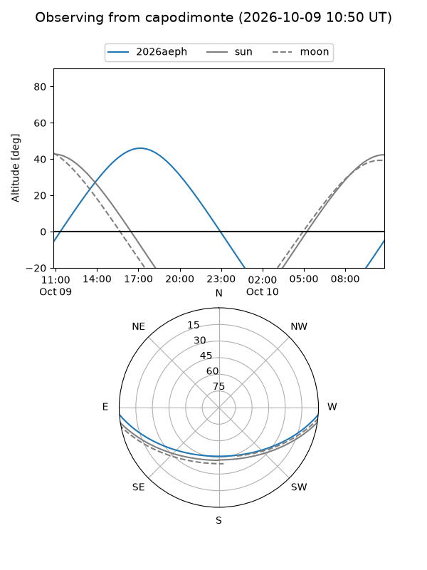
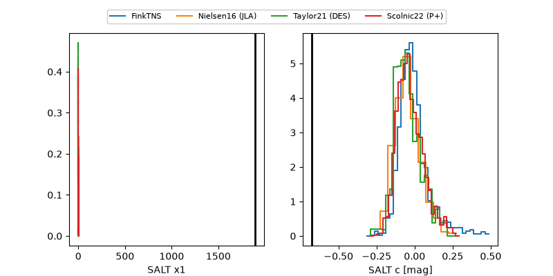

2026aeph
Target 2026aeph at 2026-10-09 13:16
Aliases and brokers:
FINK-ZTF: ztf.fink-portal.org/ZTF26abzorue
Lasair-ZTF: lasair-ztf.lsst.ac.uk/objects/ZTF26abzorue
ALeRCE-ZTF: alerce.online/object/ZTF26abzorue
YSE-PZ: ziggy.ucolick.org/yse/transient_detail/2026aeph
TNS name: wis-tns.org/object/2026aeph
Direct TNS query: direct search
alt names
ZTF26abzorue (ztf,fink_ztf)
2026aeph (tns,yse)
Coordinates:
equatorial (ra, dec) = 289.3475,-3.17745
equatorial (HMS+DMS) = 19:17:23.41,-03:10:38.82
galactic (l, b) = (33.0540,-7.22031)
Flags:
peak dt: +8.1
likely cv: !!
Photometry:
last ztfg=19.08, ztfr=19.16
3 ztfg, 1 ztfr detections
Lightcurve

Visibility



Additional plots
